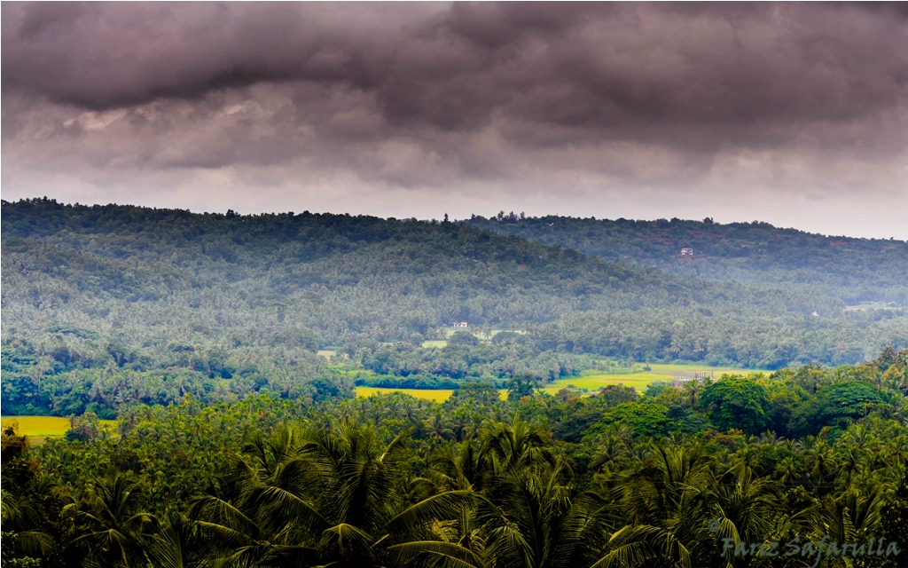
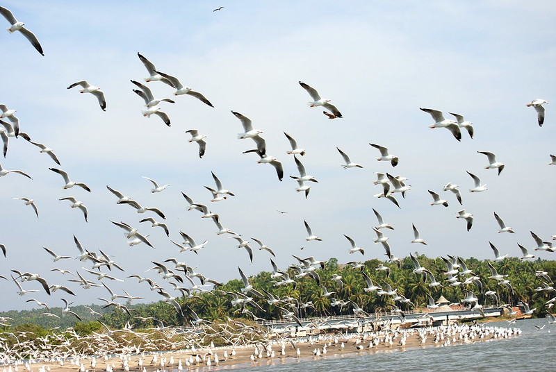
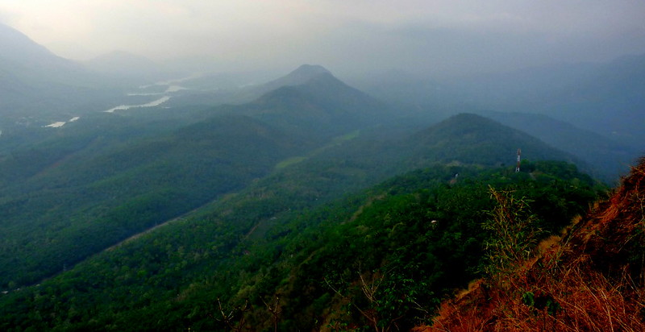

Malappuram
Apart from being a beautiful green addition on the map of Gods Own Country, Malapuram is a city that has seen an extensive history in the past and has developed through it.Be it the forest ranges of the city with coconut plantations, the river belt of Bharathapuzha, rainforests of Nedumkayam, the beauty of the river Challiyar, birds in Purathur, or the festive mood of the entire city throughout the year.
Places To Visit In Malappuram
Kadalundi Bird Sanctuary
The Kadalundi Bird Sanctuary or the Kadalundi Nagaram, is definitely one of the best places to visit in Malappuram. It sits right at the spot where River Kadalundi Puzha flows into the Arabian Sea.Easily accessible from Malappuram and Kozhikode, the bird sanctuary is host to about 100 species of native birds, and about 60 species of migratory birds.

Arimbra Hills
Arimbra Hills or Mini Ooty is one of the most scenic places to visit in Malappuram. The place is called mini Ooty because of its resemblance to the hill station of the same name, and a rather famous one at that.

Bharathapuzha River
The River of Bharata, also known as Nila, the Bharathapuzha River is a west-flowing river in the state of Kerala, and is the second longest river in the state. The river has been an integral part of life in the southern regions of Malabar. The name Nila has been given to the river to show the importance of it being more than just a river, as there are several mentions of the river in the ancient Hindu scriptures